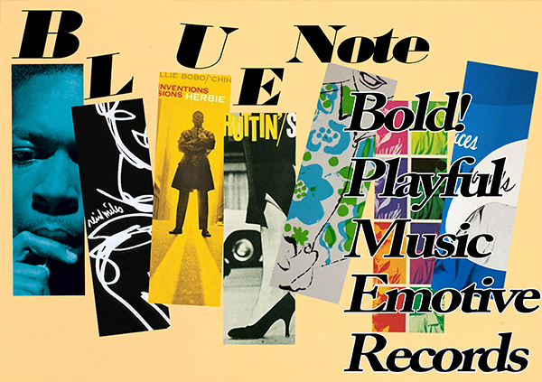
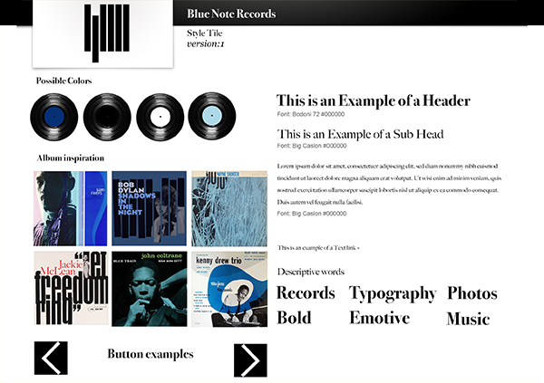
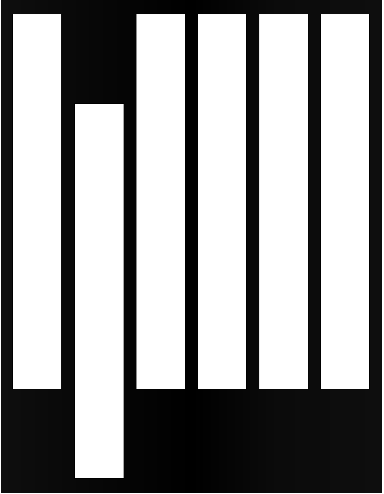
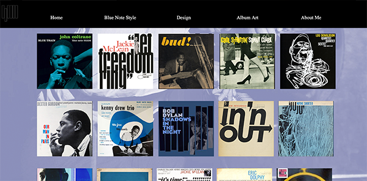
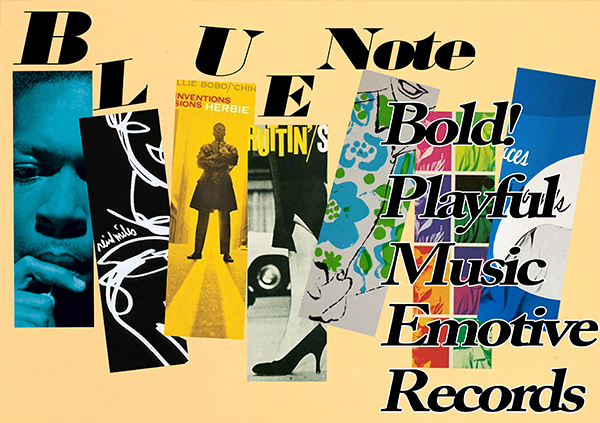
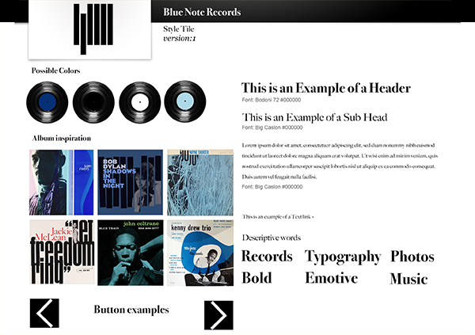
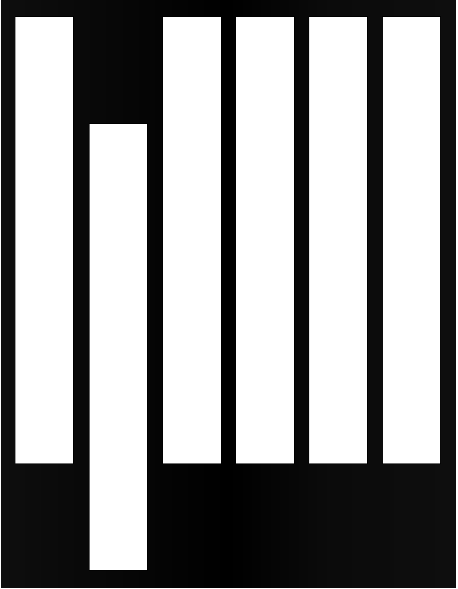
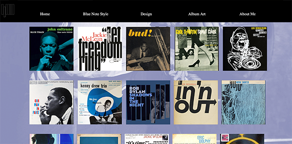

01.04.01 Responsive website
What was the project?
In this module, I was introduced to some of the basic tools used on the Multimedia design course. Interface design, digital communication, user testing, and responsive web design. As well as html, css, photoshop and illustrator.
For this particular project I had to create a responsive website based on a given style. I was given the art style “Blue Note”. The website had to have a minimum of 2 breakpoints and make use of CSS grid.
What did I learn?
There were lots of firsts in this project/module: first time working from a style tile and first time really using HTML and CSS. I had worked a bit in Photoshop and Illustrator previously, but this gave me the chance to explore that further.
I was also introduced to user testing. Specifically the 5-second test and the Trunk test or Gangster test. It was interesting testing the website on people, as it's easy to get lost in your own project and think everything is fine when there is something very obvious that sticks out to someone else. For example, my mother was quite confused about everything and really wanted to click the album pictures even though they didn't lead anywhere. (I was subsequently introduced to The Mom Test book, but it seems that this does not apply to my mother.)
We also worked with composition: including color theory, gestalt laws and contrasts. I mainly made use of these principles on my website in the menu, which features a black bar with white text, and when a page is selected the text is highlighted yellow. The text on it is symmetrically placed in the middle. This is reflective of the style as well as easy to read. When you hover over the menu text a blue box will appear over it which makes use of the figure-ground gestalt principle as it seems to appear on top of the menu bar - sort of like a piano key. There is also the law of similarity and proximity on the album cover page, as they are all the same shape and size. There are white and black color contrasts as well as complimentary blue and yellow colors throughout the site.
What would I change today?
Since this was one of the first projects there are a number of things. I would change should I create another iteration. I was never happy with the design, but I overall felt like the style was communicaged through the site.
I tried implementing grids in my website, but since I only had one column on most of the pages it wasn’t really used as much as it could have been. I had also attempted to implement the Big Caslon typography on the website, but this did not work in the end. In a future iteration I would fix this, as well as try to use grids in a better way than I had done here. As you can also see from the screengrabs below, the responsiveness isn't working optimally either. The navigation bar goes from being inline to block, but it isn't centered (which is not good gestalt!)
Below you can see my sketches, style tile and screengrabs from the website.
 






